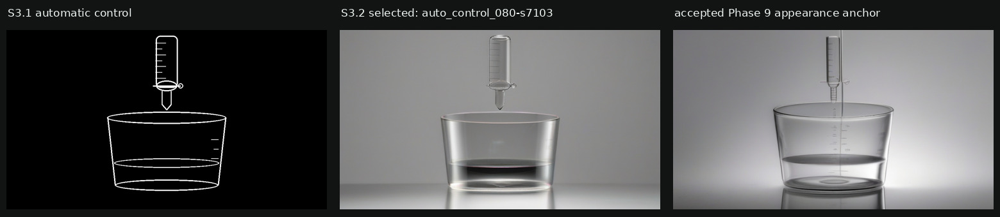

输入、选中结果和历史外观锚点

左图只负责几何；中图是本轮 raw SDXL + ControlNet 输出；右图只作为外观统计和视觉上限， 没有参与左图的几何生成。
固定候选矩阵
模型：SDXL Base 1.0 FP16 + SDXL Canny ControlNet FP16；seeds：7101/7102/7103； ControlNet scale：0.50/0.65/0.80；共 9 张。
{kind=link}
自动门禁与排名
| 候选 | 硬门禁 | 总控制覆盖 | 烧杯覆盖 | 滴定管覆盖 | 总分 |
|---|---|---|---|---|---|
| auto_control_080-s7101 | REJECT | 0.991 | 0.987 | 1.000 | 0.986 |
| auto_control_065-s7101 | REJECT | 0.966 | 0.954 | 0.995 | 0.966 |
| auto_control_065-s7103 | REJECT | 0.986 | 0.986 | 0.986 | 0.966 |
| auto_control_080-s7103 | PASS | 0.986 | 0.985 | 0.988 | 0.964 |
| auto_control_050-s7101 | REJECT | 0.964 | 0.972 | 0.941 | 0.952 |
| auto_control_080-s7102 | REJECT | 0.989 | 0.994 | 0.977 | 0.937 |
| auto_control_050-s7103 | REJECT | 0.872 | 0.885 | 0.837 | 0.905 |
| auto_control_050-s7102 | REJECT | 0.951 | 0.954 | 0.945 | 0.903 |
| auto_control_065-s7102 | REJECT | 0.934 | 0.917 | 0.972 | 0.902 |
v1 失败： 最初选中 auto_control_080-s7101，但独立视觉审计发现滴定管与烧杯被幽灵中心线连接。 EXP-003 被保留为失败，不追加 seed。
v2 自动选中：auto_control_080-s7103；可用候选 1/9。选择重放得到同一 ID。
v2 额外要求候选边缘靠近控制、背景不能多物体、本应分离的对象不能被同一边缘分量连接， 杯内也不能出现未声明中心线。“外观相似”只比较曝光、饱和度和纹理统计，不从参考图取形状。
Agent 独立视觉审计
- ✓ 画面只有一个烧杯主体区域只有一个开口玻璃烧杯，没有复制容器。
- ✓ 画面只有一个滴定管烧杯上方只有一个带刻度的透明滴定器材。
- ✓ 滴定管与烧杯按合同保持分离滴定管尖端与杯口之间有清楚空气间隙，没有玻璃颈或幽灵竖线把两者连接。
- ✓ 没有文字、标签或伪文字仅有规则刻度短线，没有数字、字母、标签、箭头或 UI。
- ✓ 玻璃与液体材质可信杯壁高光、底部折射、透明液体和中性棚拍光照一致；没有明显塑料玩具感。
- ✓ 外观参考没有改写自动几何候选几何覆盖的是 S3.1 自动控制；参考图只参与曝光、饱和度和纹理统计评分。
结论：通过 S3.2。v2 在同一九张冻结候选中唯一保留 auto_control_080-s7103；它修复了 v1 未识别的对象粘连、杯内中心线和额外边缘问题，且没有追加模型候选。
自动选择器 v2 的已知边界：传统特征仍不能完整判断高级玻璃审美， 所以 Agent 的哈希绑定视觉审计仍作为显式硬检查保存；未来可替换为版本化视觉判别器， 但不能假装当前已经自动解决。
阶段出口检查
- ✓ preflight_passed_before_generation模型、GPU、token、预算、控制图与选择器权重均先检查。
- ✓ fixed_nine_candidates_completedgenerated=9, reused=0
- ✓ selector_v1_failure_is_preservedauto_control_080-s7101 被 v2 几何门禁拒绝。
- ✓ selector_v2_replay_is_identicalauto_control_080-s7103
- ✓ at_least_one_candidate_passed_hard_gates1/9
- ✓ selected_candidate_visual_audit_passed通过 S3.2。v2 在同一九张冻结候选中唯一保留 auto_control_080-s7103；它修复了 v1 未识别的对象粘连、杯内中心线和额外边缘问题，且没有追加模型候选。
- ✓ cross_discipline_route_regressions_passedMATH-02、PHYS-01 选择不变；10+1 合同冒烟通过。
- ✓ no_video_model_was_run
- ✓ report_links_resolve候选、矩阵、审计和选择证据全部存在。
复现：/opt/venv/bin/python -m modules.video_model.stage3.phase2 --all
下一步
S3.2 通过后自动进入 S3.3 Prompt Compiler： 把目前沿用的 Phase 7 文本拆成可追溯槽位，并将视觉目标包里的材质、光照、相机和反例 编译成稳定 prompt；控制图、seed 和选择器保持不变，避免同时改多个变量。